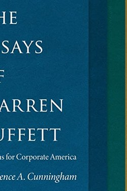

Library › Money & Finance
The Essays of Warren Buffett — Summary & Key Lessons

Buffett's shareholder letters, organised into one book — the clearest writing on business and money there is.
📖 OPEN THE FULL INTERACTIVE BREAKDOWN →🌐 Read it in Hindi, Hinglish, Gujarati, Tamil & 22 more languages — free, with audio.
💡 The Big Idea
Cunningham arranged Buffett's letters into chapters on corporate governance, finance and investing, common sense and alternatives. The core: buying a stock is buying a business; the market is a manic-depressive partner whose mood matters only as an opportunity; moats and honest management compound; and the best investment is in yourself. The letters are famous for plain English honesty — including admitting mistakes publicly.
🧠 The 6 Key Lessons
Lesson 1: The Market Is a Partner, Not an Oracle
Chapter 1: Mr. Market
Buffett's parable of Mr. Market: a manic-depressive partner quotes you a price every day, sometimes euphoric, sometimes panicked — and you may ignore him. The market exists to serve you, not instruct you. Volatility is opportunity, not risk; permanent loss of capital is the real risk.
📖 Example: In 2008, Mr. Market offered wonderful businesses at panic prices; those who heard his fear instead of his quote bought fortunes. Read the full example →
⚡ Do this: When the market (or your mood) swings hard, write one sentence: what is Mr. Market offering, and what is it actually worth?
Lesson 2: You Are Buying a Business
Chapter 2: Owners' Earnings
Stocks are not tickers; they are ownership slices of real businesses with customers, competitors and cash flows. Buffett's metrics are boring: understand what the business does, how much cash it actually generates (owners' earnings), and what the management does with it. If you cannot explain the business in a paragraph, you do not own it — you are gambling.
📖 Example: A fashionable tech stock with no earnings explanation is a lottery ticket with a ticker. Read the full example →
⚡ Do this: Write one paragraph explaining how your biggest investment makes money — or research until you can.
Lesson 3: Moats and Shitty Businesses
Chapter 3: The Moat
A great business is an economic castle with a moat: brand, cost advantage, network, switching costs. Buffett's famous test of a bad business — a textile mill — taught him that even brilliant management fights a losing battle in a commodity. Buy great businesses, hold them, and let the moat defend the compound.
📖 Example: Coca-Cola's brand and distribution let it earn returns for a century; textile mills earned them for none of them. Read the full example →
⚡ Do this: For the thing you build or buy, name the moat — if there is none, build one or walk away.
Lesson 4: Compounding: The Eighth Wonder
Chapter 4: The Snowball
Buffett's fortune is mostly the mathematics of time: a moderate return compounded over decades beats brilliance over a few years. The two destroyers are interruption (selling winners) and fees (paying middlemen). His advice to most people: low-cost index funds and patience — because the fee is the one variable you control.
📖 Example: A 10% return for 30 years turns one dollar into seventeen; the same return for 10 years turns it into two and a half. Read the full example →
⚡ Do this: Open the compounding math on your savings today: return, years, and the fee drag you are paying.
Lesson 5: Integrity: The Management Audit
Chapter 5: The Test
Buffett's tests for leadership: does management tell you the bad news without being asked, does it allocate capital wisely, and would you trust them with your daughter? When you can smell bullshit, avoid. Corporate honesty is a performance metric — it predicts how your money will be treated.
📖 Example: A CEO who apologises for a mistake before the stock falls is worth more than one who spins it after. Read the full example →
⚡ Do this: Apply the three-question trust test to the people who manage your money, time or reputation.
Lesson 6: The Circle of Competence: Stay Inside It
The Investor's Core Principles
Buffett's most non-negotiable rule: know where your circle of competence ends. The size of the circle does not matter — knowing its border does. Every venture outside the circle is tuition for a course you never enrolled in; the market will take the fee anyway. Staying inside the circle is not timidity; it is the discipline that makes conviction possible.
📖 Example: Buffett avoided technology for decades — not because he was wrong about tech, but because he was right about himself: no tribe, no edge. Read the full example →
⚡ Do this: Draw your circle: write the two or three domains you truly understand — and invest time or money only inside it.
✅ 5-Step Action Plan
- Write the Mr. Market sentence at every big swing.
- Explain your biggest investment in one paragraph.
- Name the moat of what you build or buy — build one.
- Run the compounding and fee math on your savings.
- Apply the three-question integrity test to your managers.
⚠️ When This Doesn't Work
Buffett's world rewards patience that few can afford and his specific era of moat-building may not repeat; some lessons (concentrate heavily, avoid diversification) are dangerous for non-professionals. The integrity and compounding lessons are timeless.
💀 The Graveyard Proves It
📷 Bear Stearns — The 85-Year-Old Bank That Died in a Weekend. Burn: Sold for $2/share after trading at $170 — $30B of market value erased in days Read the full case study →
💬 Best Quotes from The Essays of Warren Buffett
- “Price is what you pay; value is what you get.”
- “Rule No. 1: Never lose money. Rule No. 2: Never forget rule No. 1.”
- “It is only when the tide goes out that you discover who has been swimming naked.”
Interactive version: mark lessons as read, listen in your language, share quote cards.